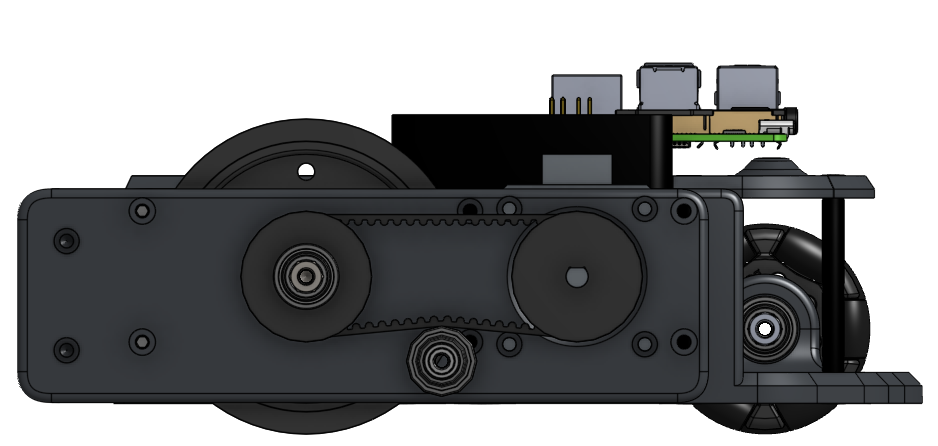

Differential drive
Two independently controlled wheels let the robot move straight, turn in place, and follow a simple path without the complexity of a steering mechanism.
Science Olympiad / Differential drive
This project was built around repeatable motion and precise positioning. The design used a compact differential-drive drivetrain with stepper motors, belt transmission, and control logic focused on getting the robot to move predictably every time.

01 / System
Robot Tour was designed around getting the robot to move the right distance and turn the right amount. The chassis was simple and compact, but the control system was built for repeatability.

Two independently controlled wheels let the robot move straight, turn in place, and follow a simple path without the complexity of a steering mechanism.
Two 47 N·cm stepper motors gave the drivetrain precise positional control. The goal was not just to spin the wheels, but to move by exact distances and turns.
The 1:1 HTD belt system moved the wheel load off the motor shaft and into a dedicated bearing layout. This made packaging easier and gave the drivetrain more room to be tuned.
The Raspberry Pi handled higher-level movement commands, trajectory logic, and the broader control structure. The stepper drivers sat between the Pi and the motors and made microstepping and current control possible.
02 / Build timeline
The design was driven by one core goal: keep movement smooth and predictable, especially when the robot had to follow a fixed path.
Date TBD
01I started with a compact differential-drive chassis so the robot could move simply and predictably. The system was intentionally lightweight and easy to package.
LayoutDate TBD
02Using a 1:1 HTD belt let the wheels be supported by bearings while keeping the stepper motors in a more convenient location. The custom tensioner was important for keeping the belt engaged without adding extra friction.
MechanicalDate TBD
03The Raspberry Pi and TMC2209 drivers were selected to make the motion system easier to control. Microstepping and current regulation let the robot move in tighter increments with better control.
ElectronicsDate TBD
04Repeated runs were used to calibrate the wheel diameter, turning behavior, and acceleration profile. A lot of the work was about making the robot match the commanded motion rather than just making it move.
Validation03 / Design choices
The biggest reason for using steppers was predictable positional control. A commanded move could be translated into a specific rotation and then into a known wheel distance.
The TMC2209s gave the system fine microstepping and current regulation, which made motion smoother and more controllable than a basic full-step setup.
The belt gave the drivetrain better packaging and left the wheel assembly easier to service. It also reduced the load on the motor shaft and made the drivetrain more adaptable during testing.
04 / Testing + next iteration
The main testing goal was making the robot move the same distance and turn the same angle every run. If the motion wasn’t repeatable, the rest of the design wouldn’t matter much.
Command known distances, measure how far the robot actually travels, and adjust the control math until the results match the goal. This is where wheel diameter, step count, and motion calibration matter most.
Testing rotation is just as important as straight-line travel. The robot needs accurate turns, and the track width, wheel size, and belt geometry all affect how much it actually turns.
Too much belt slack can make the motion inconsistent, and too much acceleration can cause missed steps. Testing the drivetrain under load helps reveal where the limits actually are.
05 / Design study